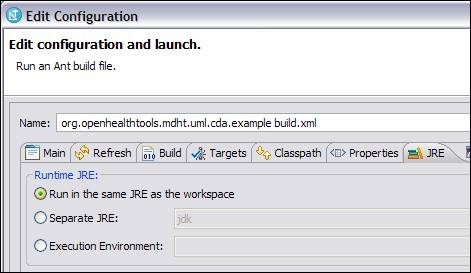
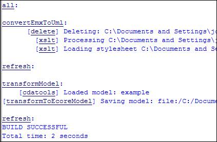
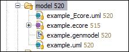
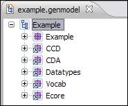
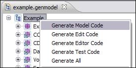
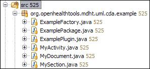

Vegetable broth
Vegetable brothJohn T.E. Timm, IBM Research
David A. Carlson, Veterans Health Administration
Now that we have explored the two diagrams associated with the example template model, we will begin to look at how this model can be used to generate a Java-based runtime implementation for producing, consuming, and validating instances. The first step in the process is to transform the template model into an implementation model. The model-to-model transformation is invoked from an Ant build task. In order to run the transformation, right-click on the build.xml file in the project root directory and select Run as > Ant Build

Vegetable broth
Make sure that Run in the same JRE as the workspace is selected from the JRE tab. Then click the Apply button at the bottom of the dialog and then Run. The console output should look something like this:

The original template model is converted into an implementation model with _Ecore.uml appended to the name. In this example, the implementation model is named example_Ecore.uml. Constraints defined as associations and property redefinitions in conjunction with metadata specified in stereotype property values are transformed into OCL constraints and annotations that are used for validation and instance population at runtime. For example, the directed association relationship that was defined between MyDocument and MySection gets transformed into the following OCL constraint:
self.getSection()->one(section : cda::Section | section.oclIsKindOf(example::MySection))
The getSection() method is an OCL query method that is defined in the base CDA model to return all of the sections under a clinical document by traversing the component.structuredBody.component association between the ClinicalDocument and Section classes. The rest of the constraint specifies that exactly one section is of type MySection (or one of its subclasses).
The second step in creating a Java runtime implementation is to create the EMF model that will be used to generate Java source code. The EMF model is provided for you in this example. The EMF model is composed of two parts: the Ecore model and the generator model. The Ecore model is very similar to the UML class model that was created during the template modeling step. The generator model contains information about how to transform the Ecore model into Java source code. As you can see in the diagram below, the Ecore model is named example.ecore and the generator model is named example.genmodel.

In order for changes to the template model to be reflected in the EMF model after the model-to-model transformation, the EMF generator model must be reloaded. In order to reload the generator model, right click on example.genmodel and select Reload from the context menu. After the model import dialog pops up, click on the Next button twice and then click on the Finish button. The new updated generator model will display in editor view as shown:

The third step is to right click on the root element named Example and select Generate Model Code. This will generate all of the required Java packages and source files under the src folder of the project.

You can explore the generated code by browsing packages such as org.openhealthtools.mdht.uml.cda.example under the src folder.

You will notice a Factory class is generated. This class is used to create instances of the classes defined in your template model (e.g. MyActivity) using the following syntax:
MyActivity activity = ExampleFactory.eINSTANCE.createMyActivity().init();
Notice the init() method is called after the createMyActivity() method. This is used to populate the instance with any fixed or default values that were specified in the template model. This reduces the number of method calls used to construct a valid instance.
We have provided a working test driver for this example in the org.openhealthtools.mdht.uml.cda.example.tests package to demonstrate the construction of a basic instance using classes from the template model. Additionally, the driver demonstrates how to use the CDA utility class to serialize and validate the document.